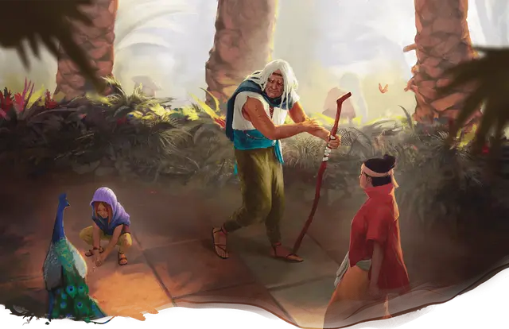

Аликсиан Прощённый
Alyxian the Absolved
Средний Гуманоид (Человек), законно-добрый, именной НИП

Класс Доспеха 15 (кожаный доспех, щит)
Хиты 161 (19к8 + 76)
Скорость 30 футов
| мод | спас | ||
|---|---|---|---|
| СИЛ | 19 | +4 | +9 |
| ЛОВ | 15 | +2 | +2 |
| ТЕЛ | 18 | +4 | +9 |
| мод | спас | ||
|---|---|---|---|
| ИНТ | 13 | +1 | +1 |
| МДР | 14 | +2 | +7 |
| ХАР | 19 | +4 | +4 |
Навыки Атлетика +9, Восприятие +7, Проницательность +7, Убеждение +9
Чувства тёмное зрение 120 футов, пассивное Восприятие 17
Языки Общий, Эльфийский
Опасность 14 (11500 опыта)
Бонус мастерства +5
Особенности
Благословенный богами. Аликсиана нельзя застать врасплох и нельзя превратить в другую форму против его воли.
Легендарное сопротивление (2/день). Если Аликсиан проваливает спасбросок, он может вместо этого сделать спасбросок успешным.
Действия
Мультиатака. Аликсиан совершает две атаки Копьём.
Копьё. . Рукопашная или Дальнобойная атака оружием: +9 к попаданию, досягаемость 5 футов или дистанция 20/60 футов, одна цель. Попадание: 7 (1к6 + 4) колющего урона или 8 (1к8 + 4) колющего урона при использовании двумя руками для рукопашной атаки плюс 9 (2к8) урона излучением.
Силовая волна (1/день). Аликсиан ударяется о землю, создавая взрыв энергии, который распространяется волнами. Каждое существо, выбранное им в пределах сферы радиусом 30 футов, с центром на Аликсиане, должно преуспеть в спасброске Телосложения Сл 17, иначе получит 35 (10к6) урона силовым полем и упадёт ничком. Существо преуспевшее в спасброске, получает получает половину этого урона и не падает ничком.
Использование заклинаний. Аликсиан может накладывать следующие заклинания, используя Харизму в качестве базовой характеристики (Сл спасброска от заклинания 17):
• Неограниченно: указание [guidance], свет [light];
• 1/день каждое: малое восстановление [lesser restoration], снятие проклятья [remove curse], подводное дыхание [water breathing];
Реакции
Парирование. Аликсиан добавляет 3 к КД против одной рукопашной атаки, которая должна попасть по нему. Для этого Аликсиан должен видеть атакующего, и должен использовать рукопашное оружие.
Легендарные действия
Аликсиан может совершить 3 легендарных действия, выбирая из представленных ниже вариантов. За один раз можно использовать только одно легендарное действие, и только в конце хода другого существа. Аликсиан восстанавливает использованные легендарные действия в начале своего хода.
Удар Небесного Сердца. Аликсиан совершает одну атаку Копьём, и весь урон от этой атаки становится уроном излучением.
Танец Несущей Перемены. . Аликсиан перемещается на свою скорость. Это перемещение не провоцирует атак.
Вуаль Лунной Ткачихи (стоит 2 действия). Аликсиан становится невидимым до конца своего следующего хода. Любое снаряжение, которое он несёт или носит с собой, становится невидимым вместе с ним.
Логово
Из озера поднимаются рухнувшие храмы Сеханин «Лунной Ткачихи», Авандрой «Несущей Перемены», и Кореллоном «Небесным Сердцем», придуманные отчаявшимся и одиноким Апотеоном. Эти сооружения стоят на скалистых островах высотой 20 футов. Независимо от его нынешней формы, Аликсиан может использовать силу этих осквернённых руин, чтобы совершать действие логова. Каждое действие логова связано с определенным местом; когда используется действие логова, соответствующие руины начинают светиться ярким малиновым светом, который сохраняется до тех пор, пока не наступит инициатива «20» в следующем раунде.
Действия логова
При значении инициативы «20» (проигрыш при ничье), Аликсиан может совершить действие в логове, чтобы создать один из следующих магических эффектов; он не может использовать один и тот же эффект два раунда подряд:
Хватка Авандры. Аликсиан использует силу разрушенного храма Авандры (область H2), чтобы создать водяное щупальце, которое поднимается из озера. Одно существо, которое Аликсиан может видеть и которое не погружено в озеро, должно преуспеть в спасброске Ловкости Сл 15, иначе станет опутанным щупальцем. Щупальце - это Большой объект, который имеет КД 10, 15 хитов и обладает иммунитетом урону психической энергией и ядом. Щупальце исчезает, когда его хиты уменьшаются до 0 или в следующий раз, когда Аликсиан совершает действие логова.
Очарование Кореллона. Аликсиан вызывает столп магического света, появляющийся из разрушенного храма Кореллона (область H3). Свет входит в тело одного существа, которое Аликсиан может видеть, но которого нет внутри разрушенного храма Кореллона или на вершине скалистого острова, который его поддерживает. Существо должно преуспеть в спасброске Мудрости Сл 15, иначе станет очарованным Аликсианом до тех пор,пока не наступит инициатива «20» в следующем раунде.
Мучения Сеханин. Аликсиан использует силу разрушенного храма Сеханин (область H4), чтобы создать водяную фигуру в пространстве одного существа, которое либо находится на озере, либо погружено в него. Водяная фигура принимает вид смутно похожее на существо, пространство которого она занимает, и наносит по нему одну рукопашную атаку (+7 к попаданию). При попадании существо получает 8 (1к8 + 4) дробящего урона.
Независимо от того, попадает он или промахивается, водяная форма исчезает после совершения своей атаки.